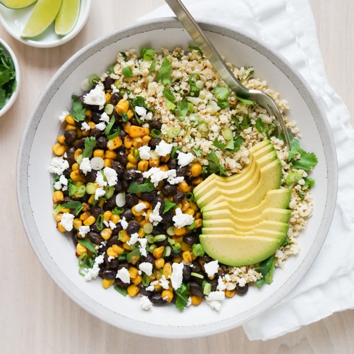

Spicy Black Bean Cauliflower Rice Bowl with Corn, Avocado & Feta

Total Time
40 min
Nutrition (per serving)
648.7 kcalCalories
24.6 gProtein
81.6 gCarbs
30.3 gFat
Full nutrition table
| Calories | 648.7 kcal |
| Total fat | 30.3 g |
| Saturated fat | 7.8 g |
| Trans fat | 0.3 g |
| Cholesterol | 25.1 mg |
| Sodium | 834.1 mg |
| Carbohydrates | 81.6 g |
| Fiber | 25.6 g |
| Sugars | 9.7 g |
| Protein | 24.6 g |
| Potassium | 1795.8 mg |
| Calcium | 328 mg |
| Iron | 7.3 mg |
| Vitamin A | 721.2 IU |
| Vitamin C | 108.3 mg |
| Vitamin D | 4.5 IU |
Cookware
Ingredients
- 1avocado
- 2 (15 oz) cansblack beans
- 1 medium headcauliflower
- 2 small bunchescilantro
- 1 (4 oz) pkgcrumbled feta cheese
- 4 cupsfrozen corn
- 1 small bunchgreen onions (scallions)
- 2limes
- chili powder
- crushed red pepper
- cumin, ground
- extra virgin olive oil
- salt
Steps
- Preheat oven to 425°F.
- Wash and dry the fresh produce.1 medium head cauliflower
1 small bunch green onions (scallions)
2 small bunches cilantro
2 limes
1 avocado - Cut cauliflower head into quarters; using a box grater, hold the stem end of the cauliflower and coarsely grate. (Alternatively, transfer cauliflower to the bowl of a food processor; pulse until rice-like in consistency.) Place in a medium bowl.
- Trim and thinly slice green onions crosswise. Add half to the bowl with the cauliflower. (Place remaining onions on a plate and set aside.)
- Add oil and spices to the bowl, then stir to combine. Transfer cauliflower rice to a large baking sheet pan and spread out in an even layer. (Reserve bowl for later use.)2 tbsp extra virgin olive oil
2 tsp cumin, ground
½ tsp crushed red pepper
½ tsp salt - Place baking sheet in the oven (it doesn't have to be fully heated) and roast, stirring cauliflower halfway through, until rice is tender and golden, 15-18 minutes.
- Meanwhile, shave cilantro leaves off the stems; discard stems and roughly chop the leaves. Place half in the reserved bowl. (Add remaining cilantro to the plate with the onions.)
- Juice one lime into the bowl with the cilantro. Cut remaining lime into wedges and add to the plate.
- Preheat a large skillet over medium-high heat.
- While the skillet heats up, drain and rinse beans in a colander.2 (15 oz) cans black beans
- Once the skillet is hot, add oil and swirl to coat the bottom. Add beans, corn, and spices; cook, stirring occasionally, until beans and corn are warmed through and spices are fragrant, 3-5 minutes. Remove from heat, add feta, and stir to combine.2 tbsp extra virgin olive oil
4 cups frozen corn
1 tbsp chili powder
1 tsp cumin, ground
1 tsp salt
½ tsp crushed red pepper
1 (4 oz) pkg crumbled feta cheese - Meanwhile, halve and pit avocado; using a spoon, scoop out the flesh. Slice crosswise into thin pieces. Add to the plate.
- When the cauliflower is done, remove from the oven. Add lime and cilantro mixture, then stir to combine.
- Divide cauliflower rice between bowls; top with spicy bean sauté, reserved cilantro, green onions, and avocado. Serve with lime wedges for squeezing and enjoy!